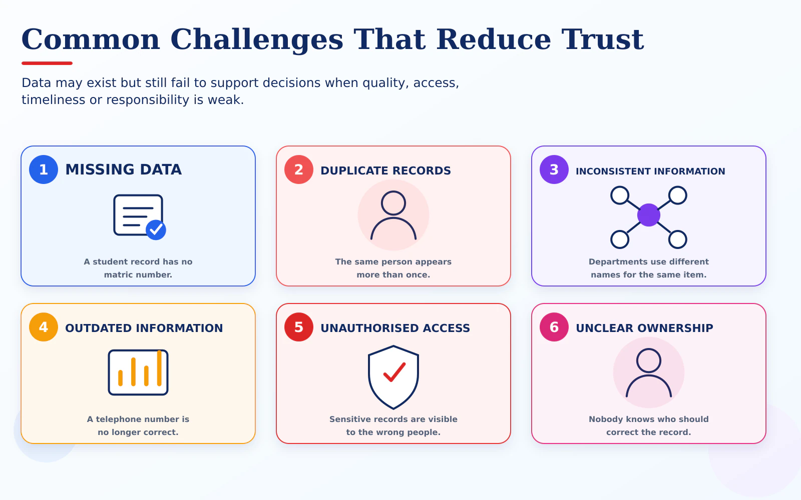

What can prevent data from being useful?
Topic 5 focuses on recognising these issues. Detailed solutions will be discussed later in the course.

Quality
Missing, duplicated, outdated or inconsistent records reduce confidence in the information.
Integration
Different departments may record related information in different ways.
Responsibility
Unclear ownership makes it difficult to correct, approve or manage data.
Privacy and security
Sensitive data must only be available to appropriate and authorised users.
Timeliness
Information that arrives too late may no longer support the required decision.
Resources and skills
Organisations need suitable people, practices and computing resources.
!
Remember: More data does not automatically mean better information. Trust depends on how data is created, managed and used.
!
Responsible data use
- Collect only the information that is necessary.
- Use data for an appropriate and clearly stated purpose.
- Protect personal and sensitive information.
- Provide access only to authorised users.
- Correct inaccurate information and explain how it is used.